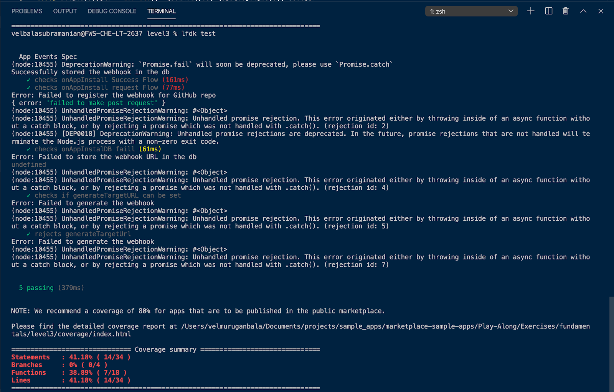
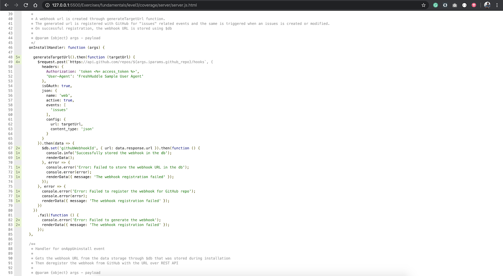
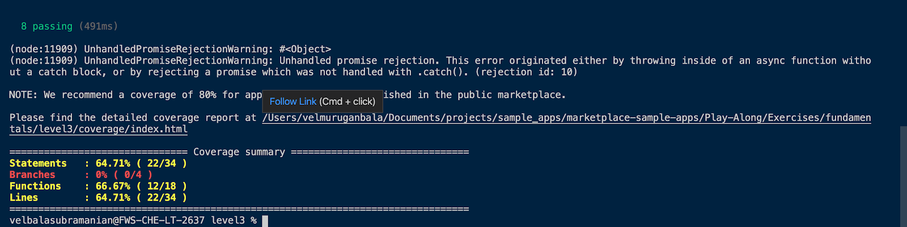
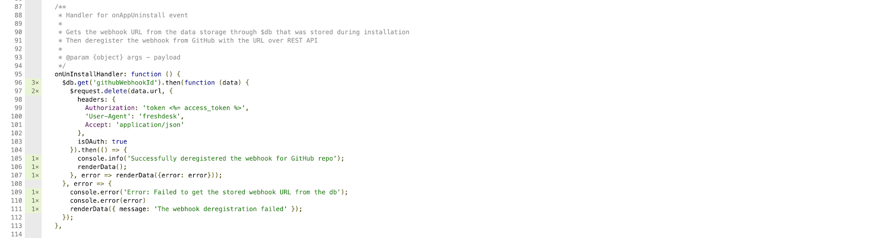
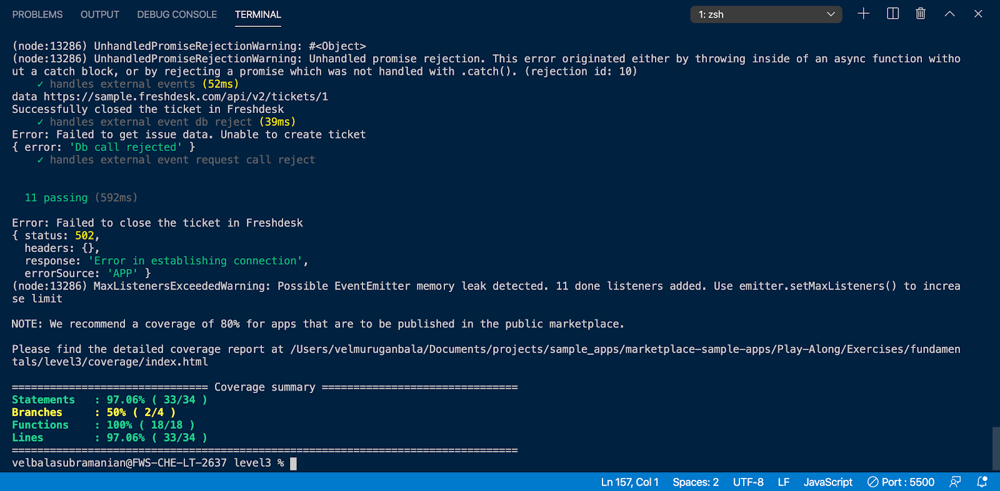
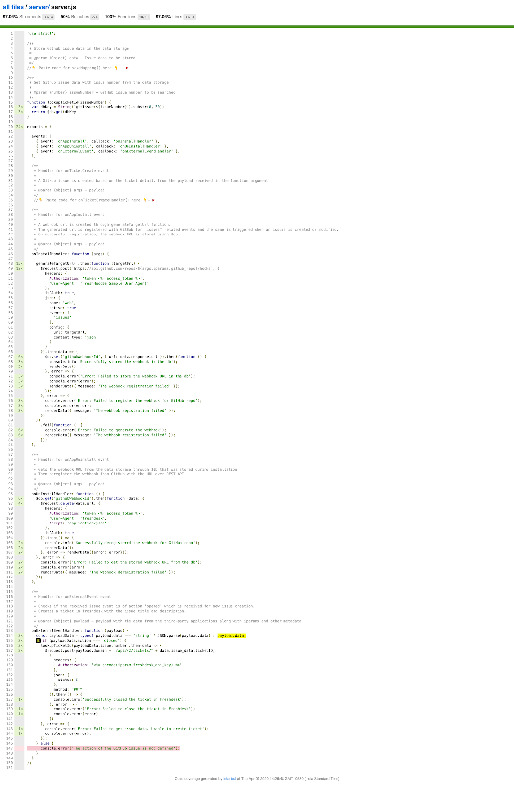

The FDK comes with a built-in unit testing framework for serverless apps. This framework is built using the popular mochaV5 framework.
This tutorial will cover the process of writing test cases for a freshdesk serverless app that creates a webhook in GitHub and saves it in data storage.
The content is intended for the developers with working knowledge of HTML, CSS, JavaScript, and basic knowledge in writing unit tests using mochaJS or other javascript unit testing framework.
The FDK supports local testing serverless apps using simulated events. This is however cumbersome and not easily repeatable as the app grows over time. Automated unit tests are designed to run quickly in a repeatable manner and grow along with the app.
Unit tests also help accelerate review cycles for an app that is to be published and listed on the Freshworks Marketplace. The primary motivation to write and maintain these tests within your app would include,
Before starting this section, it's highly recommended to go through the documentation for the test framework to get accustomed to the concept of unit testing.
vel@freshworks ~% git clone git@github.com:freshworks/marketplace-sample-apps.git vel@freshworks ~% cd marketplace-sample-apps/Play-Along/Exercises/fundamentals/level3test/server.js
'use strict';
// Assertion library import
const expect = require('chai').expect;
// Payload to invoke events
const appInstallArg = require('./args/onAppInstall.json');
const appUninstallArg = require('./args/onAppUninstall.json');
const externalEventArg = require('./args/onExternalEvent.json');
describe('App test Suite', function() {
// Your test goes here
});
In the following sections, we will write tests to cover all code paths inside all handlers
Using the testing framework, you can write unit tests for a serverless app, similar to any generic unit test written using Mocha and an assertion library. The FDK offers two custom interfaces to help write unit tests
it('checks onAppInstall Success Flow', function() {
const stubbedGenerate = this.stub('generateTargetUrl').resolves('http://randomurl.com/webhook');
const stubbedRequest = this.stub('$request', 'post').resolves({
response:{
url: 'http://randomurl.com/webhook'
}
});
const stubbedDB = this.stub('$db', 'set').callsFake(function(key, value) {
expect(key).to.equal('githubWebhookId');
expect(value.url).to.equal('http://randomurl.com/webhook');
stubbedRequest.restore();
stubbedDB.restore();
stubbedGenerate.restore();
return Promise.resolve()
});
return this.invoke('onAppInstall', appInstallArg);
});
it('checks onAppInstall request Flow', function() {
const stubbedRequest = this.stub('$request', 'post').rejects({
error: 'failed to make post request'
});
this.invoke('onAppInstall', appInstallArg);
stubbedRequest.restore();
});
it('checks onAppInstalDB fail', function() {
const stubbedRequest = this.stub('$request', 'post').resolves({
response:{
url: 'http://randomurl.com/webhook'
}
});
const stubbedDB = this.stub('$db', 'set').callsFake(function(){
stubbedRequest.restore();
stubbedDB.restore();
return Promise.reject();
})
this.invoke('onAppInstall', appInstallArg);
})
it('checks if generateTargetURL can be set', function() {
const stubbedGenerate = this.stub('generateTargetUrl').resolves('http://randomurl.com/webhook');
const StubbedRequest = this.stub('$request', 'post').callsFake(function(url,payload) {
expect(payload.json.config.url).to.equal('http://randomurl.com/webhook');
StubbedRequest.restore();
stubbedGenerate.restore();
});
this.invoke('onAppInstall', appInstallArg)
});
it('rejects generateTargetUrl',function(){
const stubbedGenerate = this.stub('generateTargetUrl').rejects({
error:'unable to generate target url'
});
this.invoke('onAppInstall', appInstallArg);
stubbedGenerate.restore();
})In the code snippet above each, "it(‘comment', function(){ })" block represents a test case, to build a robust application it is suggested to test all possible scenarios including the edge cases.
Let us take "it('checks onAppInstall Success Flow')" for example in which 'generateTargetUrl' is stubbed first to mock the values of output for test purpose, followed by $request and $db
Once the platform features are stubbed, the "onAppInstall" event is invoked with the payload appInstallArg(a JSON file imported at the beginning).
After the "onAppInstall" event is invoked, the handler("onAppInstallHandler" associated with the event inside of src/server.js will be invoked with all the stubbed values and the payload, using which the validations/assertions are done for webhookURL saved in the data storage.


4. From the test case above we have covered all the code paths and statements in OnAppInstall Handler
it('handles app uninstall', function() {
const stubbedDB = this.stub('$db', 'get').resolves({url:'http://randomurl.com/webhook'});
const StubbedRequest = this.stub('$request', 'delete').callsFake(function(data){
console.log('data',data);
StubbedRequest.restore();
stubbedDB.restore();
return Promise.resolve();
});
this.invoke('onAppUninstall',appUninstallArg);
});
it('handles App Uninstall events db failure',function(){
const stubbedDB = this.stub('$db','get').rejects('Db call rejected');
this.invoke('onAppUninstall',appUninstallArg);
stubbedDB.restore();
});
it('handles App Uninstall events request failure',function(){
const stubbedDB = this.stub('$db', 'get').resolves({url:'http://randomurl.com/webhook'});
const StubbedRequest = this.stub('$request', 'delete').rejects('request call rejected');
this.invoke('onAppUninstall',appUninstallArg);
stubbedDB.restore();
StubbedRequest.restore();
});


it('handles external events',function(){
const stubbedDB = this.stub('$db','get').resolves({issue_data:{
ticketID:1
}});
const StubbedRequest = this.stub('$request', 'post').callsFake(function(data){
console.log('data',data);
StubbedRequest.restore();
stubbedDB.restore();
return Promise.resolve();
});
this.invoke('onExternalEvent', externalEventArg)
})
it('handles external event db reject', function() {
const stubbedDB = this.stub('$db','get').rejects({error:'Db call rejected'});
this.invoke('onExternalEvent', externalEventArg);
stubbedDB.restore();
});
it('handles external event request call reject', function() {
const stubbedDB = this.stub('$db','get').resolves({issue_data:{
ticketID:1
}});
const StubbedRequest = this.stub('$request', 'delete').rejects('request call rejected');
this.invoke('onExternalEvent', externalEventArg);
stubbedDB.restore();
StubbedRequest.restore();
})

Assignment :-
Write New test cases or modify the existing use case to cover the lines 124 and 147